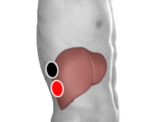

Toxocara
Par
retro hepático - retro hepático
retrohepático - riñón

Generalidades:
Por lo común no causan síntomas; en algunos casos se puede presentar: Fiebre Terciaria (es recurrente y ciclica tipo paludismo), vomito obstrucción laringea.
Ocasiona alergias. Este parásito nematodo prolifera en los intestinos de perros y gatos. En humanos la infección por Toxocara se denomina toxocarasis y es más común en niños, por su contacto con mascotas o llevarse objetos sucios a la boca. Más común que cause trastornos en niños y personas inmunodeprimidas